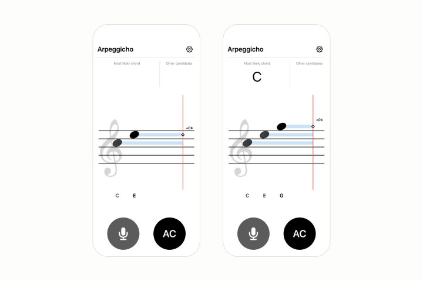
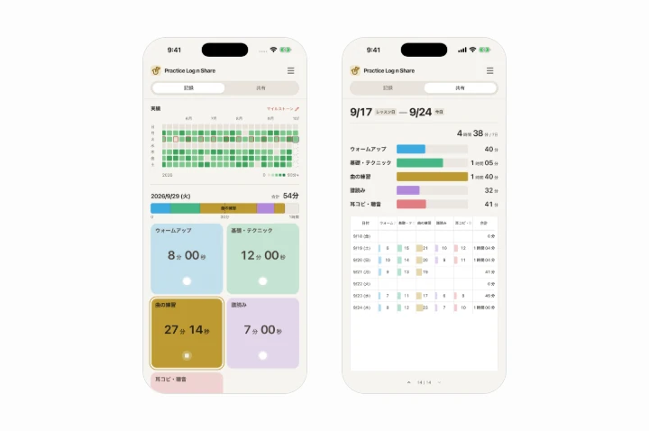
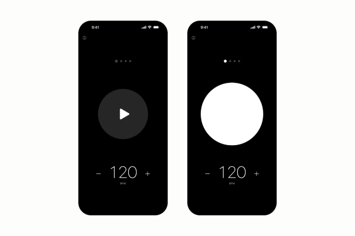
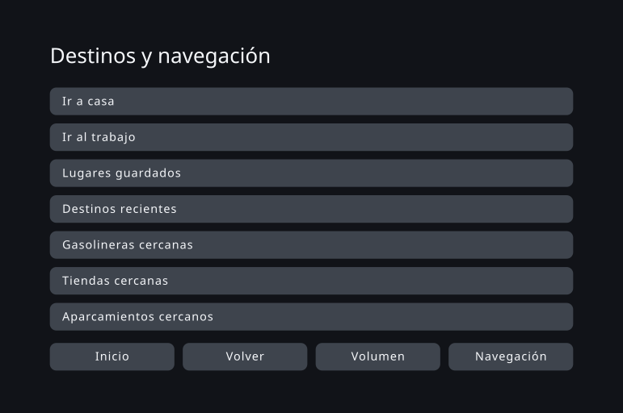
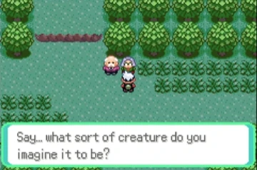
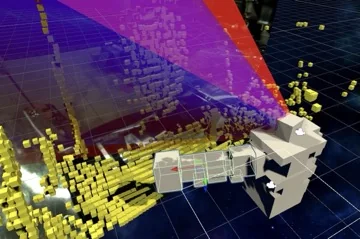
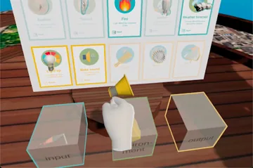
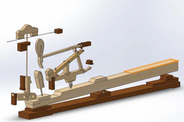
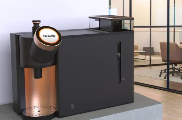
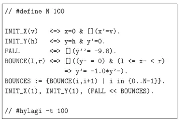

Takafumi Horiuchi | Ingeniero de diseño
Mi formación es en ciencias de la computación y Design & Engineering, y he trabajado en consultoría en investigación, estructuración de problemas y definición de requisitos. Mi investigación y mis proyectos independientes exploran la cognición humana y la interacción física, conectando los sistemas técnicos con la experiencia de uso mediante el diseño y la creación de prototipos. Este portafolio presenta los proyectos y el proceso detrás de ellos.
Proyectos personales recientes
-

-

-

-

-

Personalizar interfaces mediante un diseño guiado por restricciones (agosto de 2026) Exploré cómo generar interfaces adaptadas a las características cognitivas, sensoriales y físicas, dentro de los límites de la evidencia científica y las restricciones de diseño. Utilicé una prueba de concepto de navegación para automóviles para generar interfaces y comprobar si cumplían los requisitos, y así explorar el potencial y las limitaciones del enfoque. La usabilidad y la seguridad no se han evaluado con usuarios. -

Generar un Pokémon único (julio de 2026) Un prototipo de investigación que genera una nueva especie de Pokémon a partir de las palabras del jugador durante la partida y le permite encontrarla y capturarla. Diseñé las restricciones que la IA debe respetar a lo largo de esa experiencia.

Proyectos académicos anteriores
-

Tesis de máster sobre diseño de interacción entre personas y robots (julio de 2021) Propuse e implementé un mecanismo de prevención de colisiones que utiliza el campo de visión del operador, estimado a partir de la orientación de su cabeza, para ayudar a determinar por dónde puede moverse un robot, sin necesidad de registrar previamente los objetos. Confirmé el comportamiento previsto en cinco pruebas de demostración. -

Un sistema de realidad virtual para que los niños creen prototipos de objetos interactivos (febrero de 2021) Un entorno de prototipado en realidad virtual en el que los niños pueden construir y hacer funcionar los objetos inteligentes que imaginan en el juego de mesa SNaP. Definen las condiciones y el comportamiento de cada objeto mediante tres tarjetas: entorno, entrada y salida. -

Análisis del movimiento del mecanismo de un piano (enero de 2020) Este proyecto reconstruyó en 3D el mecanismo de un piano a partir de un dibujo en sección y utilizó cálculos teóricos y análisis en SolidWorks para examinar cómo la acción sobre la tecla se traduce en velocidad del macillo y fuerza de reacción de la cuerda. -

Tres proyectos de estudio de diseño (2019–2020) Tres proyectos grupales de diseño de productos realizados a lo largo de tres semestres en el Politecnico di Milano: una cafetera para espacios compartidos, un respirador purificador de aire motorizado (PAPR) para soldadores y un dispositivo de evaluación previa a la donación de sangre sin contacto. -

Tesis de grado sobre programación por restricciones (junio de 2019) Desarrollé un método que identifica las condiciones que ya no pueden volver a cumplirse durante una simulación y las elimina de la búsqueda. En el modelo de evaluación, redujo el tiempo de ejecución aproximadamente a la mitad sin alterar el resultado de la simulación.